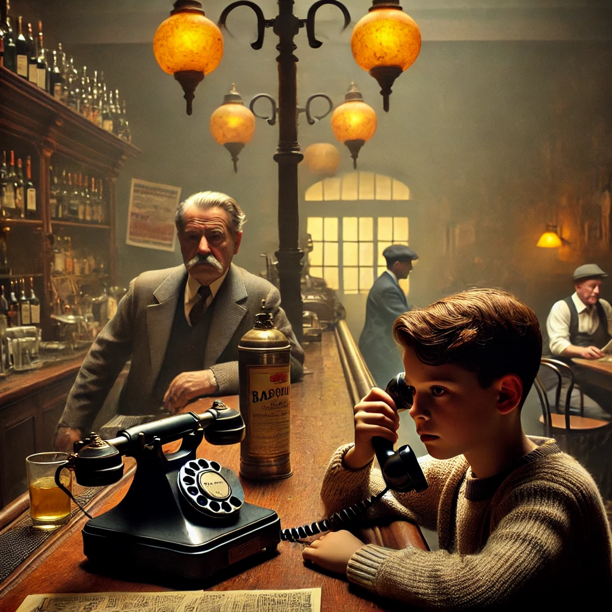

16.Dezember
Der Aufbruch
Die Bar war klein, rauchig und spartanisch eingerichtet. An diesem Sonntagnachmittag lag eine merkwürdige Stille über dem Raum. Außer dem bärtigen Wirt, der gelangweilt hinter der Theke stand und an einer Espressotasse nippte, war kaum jemand da. Ein alter Mann saß in der Ecke und blätterte in einer zerfledderten Zeitung, während ein Radio im Hintergrund leise italienische Volksmusik spielte. Der Raum roch nach Kaffee, abgestandenem Rauch und einer Spur von Zitrone, vermutlich vom Putzmittel, mit dem die Theke abgewischt worden war.
Maggy trat an die Theke und fragte auf Italienisch mit einem charmanten Lächeln: „Posso usare il telefono, per favore?“ Der Wirt musterte sie kurz skeptisch, nickte dann aber. Er zog ein altes Wandtelefon mit Drehscheibe unter der Theke hervor und stellte es vor sie.
Johann nahm den Hörer und wählte die +56836767823672. Eine Eingebung hatte ihn zu der Nummer geführt, als er Carlos’ kryptische Beschreibung "+jovenportadora" entschlüsselte. Eigentlich war es ganz einfach: Die Buchstaben standen auf dem Nummernblock alter Handys, wo sie zusätzlich zu den Zahlen zu finden waren. Wieso er das wusste, war ihm selbst ein Rätsel. Solche Handys hatte er nie benutzt – sie waren lange vor seiner Zeit modern gewesen. Er hatte nur ein einziges Mal kurz Carlos’ Gerät in der Hand gehalten, aber selbst da nicht bewusst auf die Tasten geachtet. Vielleicht hatte er wirklich magische Fähigkeiten… Es dauerte nur wenige Sekunden, bis Carlos drangegangen war.
„Johann! Gut, dass du anrufst. Ist die Verbindung sicher?“
Johann zögerte. „Ist sie das? Das Telefon ist ziemlich alt.“
Carlos lachte leise. „Das ist gut. Je altertümlicher, desto besser. Es hat keine Chips, die manipulierbar sind. Und gut, dass Du das Handy, das ich dir gegeben hatte, nicht nutzt. Ich habe gemerkt, dass jemand mithört. Es ist mir immer noch schleierhaft, wie das passieren konnte. Es war doch alles so gut geplant gewesen. Beide Handys waren nirgendwo registriert. Es ist mir unerklärlich. Aber sag mal, was hast Du mit dem alten Handy gemacht?“
Johann erzählte ihm, was passiert war: „Dass die Verbindung abgehört wurde, kann ich dire ganz leicht erklären. Es gab einen Maulwurf. Giorgio hat das Handy manipuliert, bevor er es mir gegeben hat. Deshalb war die Verbindung nicht sicher. Aber das Handy ist jetzt… na ja, mit einer Touristin unterwegs.“ Johann schnaubte leise und musste unwillkürlich grinsen, als er daran dachte, wie absurd diese Situation war. Dass sein altes Handy, das so antiquiert war, dass es wie aus einem Technikmuseum wirkte, nun irgendwo durch Ostia getragen wurde. Die Vorstellung, dass die Verfolger sich die Mühe machten, diesem Relikt nachzujagen, beruhigte ihn irgendwie. „Carlos, tut mir leid, dass ich es nicht gleich bemerkt habe, aber Giorgio war wirklich geschickt.“
Carlos lachte kurz. „Das ist nicht schlecht, Johann. Aber das tut mir leid. Es war meine Verantwortung, alle Eingeweihten gut zu überprüfen. Ich dachte wir können uns auf Giorgio verlassen. Aber da habe ich mich wohl getäuscht. Wie bist Du ihm auf die Schliche gekommen? Hast du Beweise?“
Johann seufzte. „Nein… es ist nur so ein Gefühl. Aber ich weiß, dass es stimmt! Wir können bei Hans nicht bleiben. Die Gauner wissen, wo wir sind.“
Carlos wurde ernst. „Ja, Ihr müsst da weg. Und es ist Zeit, dass wir uns treffen. Ich habe genug Informationen gesammelt, ich denke wir können zur Tat schreiten. Ihr müsst versuchen, Giorgio abzuhängen. Am besten fahrt ihr heute Abend mit dem Zug nach Brindisi. Wenn ihr in Bari den Zug wechselt, ist ein guter Zeitpunkt um Giorgio loszuwerden. Lasst Euch etwas einfallen. In Brindisi werde ich ein Boot für Euch organisieren. Morgen früh ab 6h wartet dort ein Boot nur auf Euch. Es wird aussehen wie ein normales Ausflugsschiff. Ich werde dem Kapitän sagen, er soll für Fahrten nach Dubrovnik werben, für genau 530 Euro. Ausser Euch wird sonst niemand auf dem Boot sein. Versichert Euch, dass ihr nicht verfolgt werdet! Alles weitere werde ich mit dem Kapitän besprechen. “
Johann nickte und spürte eine Mischung aus Anspannung und Entschlossenheit. „Wir werden uns etwas einfallen lassen.“
Carlos’ Stimme wurde weicher. „Ihr schafft das. Glaub an dich und deine Fähigkeiten. Du bist nicht allein, Johann.“
Maggy und Johann verabschiedeten sich vom Wirt und machten sich auf den Weg nach Hause. Unterwegs sprachen sie über den Plan. „Was erzählen wir Giorgio?“ fragte Johann.
„Wir sagen ihm, dass Carlos möchte, dass wir ihn sofort in Bari treffen. Das bringt die Verfolger auf eine falsche Spur, denn in Bari wollen wir sie ja abhängen.“
Johann zögerte. „Aber ist das nicht gefährlich, wenn alle Gauner dann dort sind und vielleicht sogar vorhaben direkt zuzuschlagen?“
Maggy legte ihm eine Hand auf die Schulter. „Ich glaube, wir haben keine Wahl. Und du schaffst das. Du musst nur an dich glauben.“
Zurück zu Hause informierten Johann und Maggy Hans über Carlos' Plan und erzählten es so, dass Giorgio, der in der Nähe war, jedes Wort mitbekam. "Carlos möchte, dass wir ihn sofort in Bari treffen," erklärte Johann, und Giorgio grinste verstohlen. Sofort herrschte geschäftiges Treiben
Ohne zu zögern, begann Giorgio, seine eigenen Sachen zu packen. Auch Hans und Maggy bereiteten sich darauf vor, den nächsten Zug nach Bari zu nehmen. Hans packte hektisch ein paar Sachen zusammen, während Maggy Johann aufforderte, das Gleiche zu tun. Johann sah verloren aus. „Ich habe doch gar nichts dabei!“
Hans hielt kurz inne. „Oh, das habe ich ganz vergessen zu sagen: Giorgio hat deine Sachen gebracht. Euer Gepäck war doch im Taxi. Er hat deinen Rucksack rausgenommen, bevor er das Auto zurückgebracht hat. Er steht oben in deinem Zimmer.“
Johann war erstmal unendlich erleichtert. Doch kurz darauf schlichen sich schon wieder Bedenken ein. Hoffentlich ist da nicht noch ein zweiter Tracker drin.
Dann erst fiel ihm auf, dass ja auch Maggy ihre Sachen packte. „Kommst du etwa mit? Das ist doch viel zu gefährlich!“
Maggy grinste. „Klar komme ich mit. Erstens will ich nicht allein hier bleiben. Und zweitens kann ich dir helfen. Ich kenne die Prophezeiung und…“ Sie zögerte. „Und ich möchte einfach helfen.“
Am Bahnhof angekommen, entfernte sich Giorgio, um eine Zigarette zu rauchen. Maggy und Johann nutzten die Gelegenheit, um Hans schnell in den Plan einzuweihen. Johann erzählte von Carlos’ Anweisungen. Sie waren sich einig: Giorgio musste in Bari abgehängt werden. Aber wie?
Hans runzelte die Stirn. „Wir müssen vorsichtig sein. Wenn er Verdacht schöpft, wird das alles noch schwieriger. Habt ihr eine Idee?“
Die drei sahen sich an und wussten, dass die nächsten Stunden entscheidend sein würden.
Wie soll Johann Giorgio abhaengen?